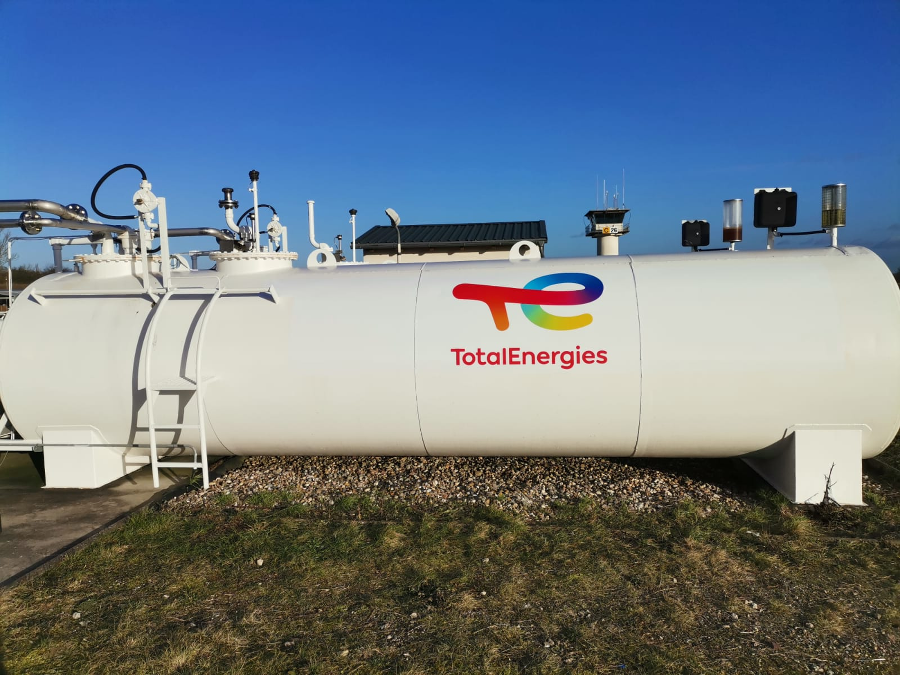
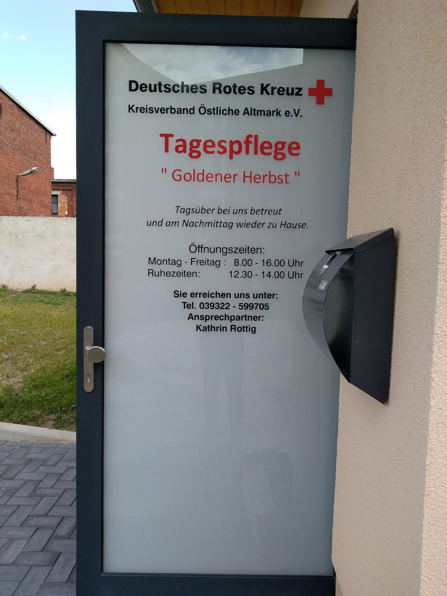
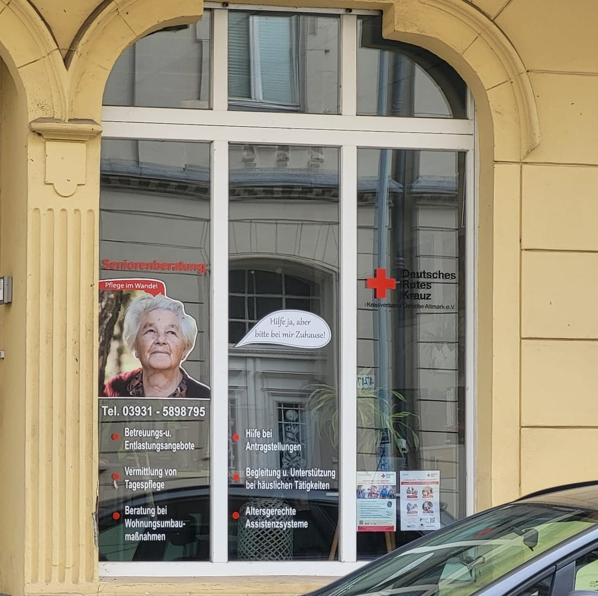
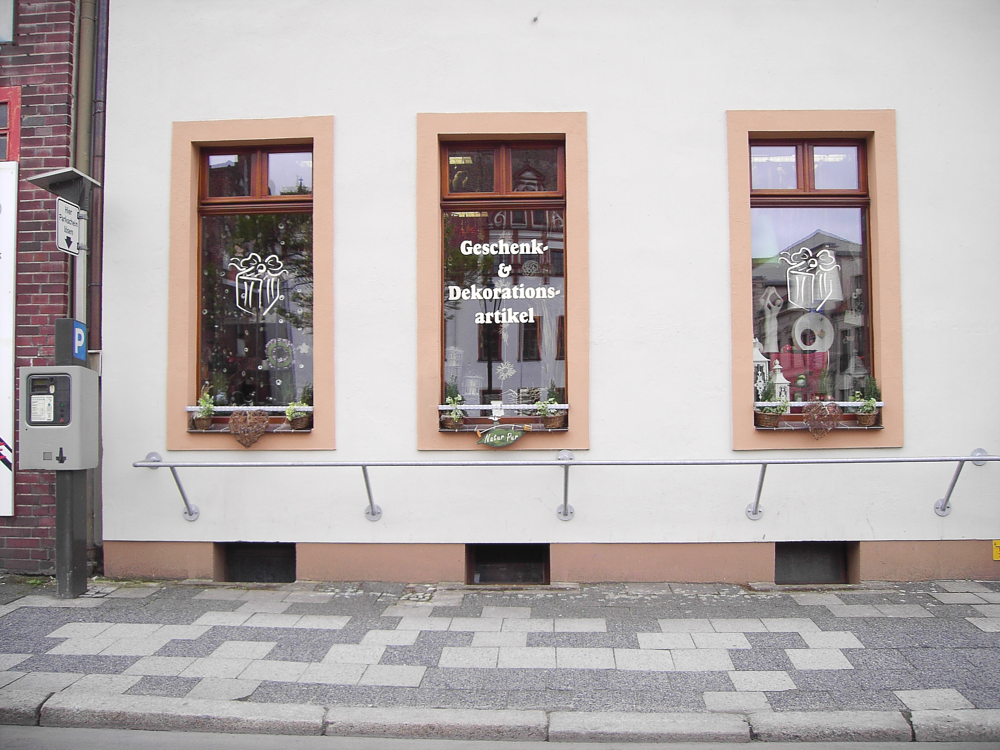
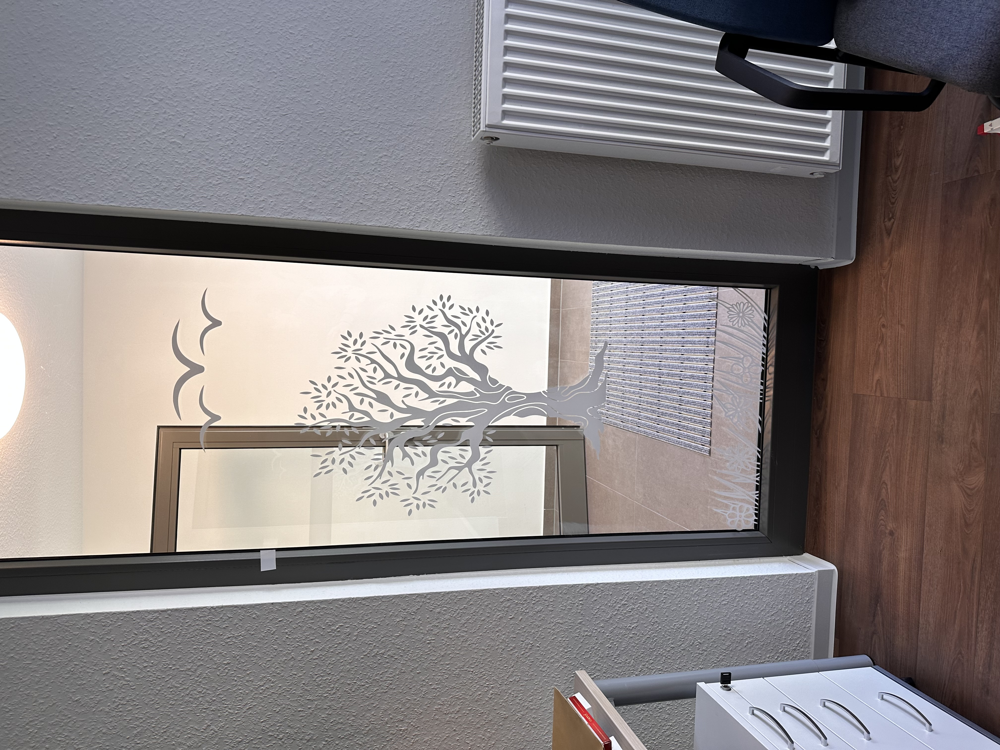

Folientechnik – Vielfalt, die begeistert
Ob glänzend, matt oder transparent – mit moderner Folientechnik eröffnen sich zahlreiche Möglichkeiten, Ihre Botschaft wirkungsvoll zu präsentieren. Wir gestalten, drucken und montieren Folien, die nicht nur optisch, sondern auch funktional überzeugen.
Unsere Leistungen für Sie:
- Werbefolien – ideal für Schaufenster, Türen, Fassaden und andere Flächen.
- Sichtschutz- und Milchglasfolien – eleganter Blickschutz mit individuellem Design.
- Dekor- und Designfolien – kreative Effekte für ein einzigartiges Erscheinungsbild.
- Sicherheitsfolien – erhöhen den Schutz von Glasflächen und die Sicherheit vor Bruch.
- Sonnenschutzfolien – mindern Hitze und UV-Strahlung, ohne die Sicht zu beeinträchtigen.
Ihre Vorteile:
- Individuelle Lösungen zugeschnitten auf Ihr Projekt
- Hochwertige Materialien für langfristige Haltbarkeit
- Professionelle Verarbeitung und Montage
- Kreative Designs, die im Gedächtnis bleiben
Mit unserer Folientechnik verwandeln wir jede Fläche in einen Eyecatcher – funktional, dekorativ und exakt auf Ihre Anforderungen abgestimmt.




